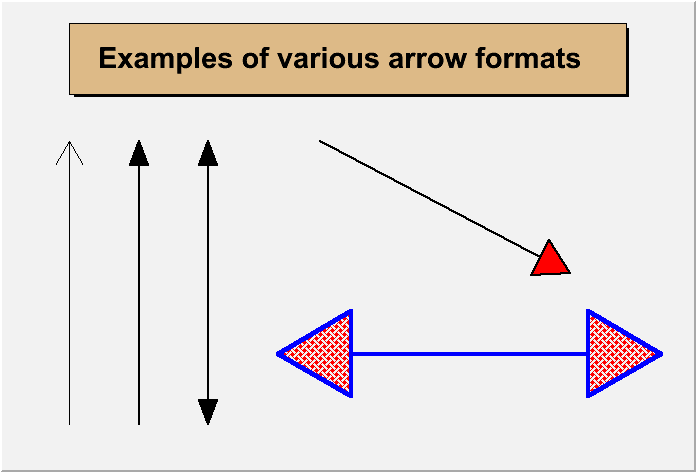
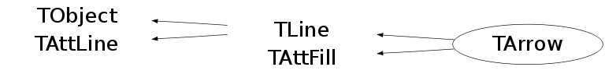

class TArrow: public TLine, public TAttFill
TArrow : to draw all kinds of arrows
Once an arrow is drawn on the screen:
- One can click on one of the edges and move this edge.
- One can click on any other arrow part to move the entire arrow.
{kind=link}

//Draw arrows //Author: Rene Brun { c1 = new TCanvas("c1"); c1->Range(0,0,1,1); TPaveLabel par(0.1,0.8,0.9,0.95,"Examples of various arrow formats"); par.SetFillColor(42); par.Draw(); TArrow ar1(0.1,0.1,0.1,0.7); ar1.Draw(); TArrow ar2(0.2,0.1,0.2,0.7,0.05,"|>"); ar2.SetAngle(40); ar2.SetLineWidth(2); ar2.Draw(); TArrow ar3(0.3,0.1,0.3,0.7,0.05,"<|>"); ar3.SetAngle(40); ar3.SetLineWidth(2); ar3.Draw(); TArrow ar4(0.46,0.7,0.82,0.42,0.07,"|>"); ar4.SetAngle(60); ar4.SetLineWidth(2); ar4.SetFillColor(2); ar4.Draw(); TArrow ar5(0.4,0.25,0.95,0.25,0.15,"<|>"); ar5.SetAngle(60); ar5.SetLineWidth(4); ar5.SetLineColor(4); ar5.SetFillStyle(3008); ar5.SetFillColor(2); ar5.Draw(); return c1; }
Function Members (Methods)
public:
| TArrow() | |
| TArrow(const TArrow& arrow) | |
| TArrow(Double_t x1, Double_t y1, Double_t x2, Double_t y2, Float_t arrowsize = 0.05, Option_t* option = ">") | |
| virtual | ~TArrow() |
| void | TObject::AbstractMethod(const char* method) const |
| virtual void | TObject::AppendPad(Option_t* option = "") |
| virtual void | TObject::Browse(TBrowser* b) |
| static TClass* | Class() |
| virtual const char* | TObject::ClassName() const |
| virtual void | TObject::Clear(Option_t* = "") |
| virtual TObject* | TObject::Clone(const char* newname = "") const |
| virtual Int_t | TObject::Compare(const TObject* obj) const |
| virtual void | Copy(TObject& arrow) const |
| virtual void | TObject::Delete(Option_t* option = "")MENU |
| Int_t | TAttLine::DistancetoLine(Int_t px, Int_t py, Double_t xp1, Double_t yp1, Double_t xp2, Double_t yp2) |
| virtual Int_t | TLine::DistancetoPrimitive(Int_t px, Int_t py) |
| virtual void | Draw(Option_t* option = "") |
| virtual void | DrawArrow(Double_t x1, Double_t y1, Double_t x2, Double_t y2, Float_t arrowsize = 0, Option_t* option = "") |
| virtual void | TObject::DrawClass() constMENU |
| virtual TObject* | TObject::DrawClone(Option_t* option = "") constMENU |
| virtual TLine* | TLine::DrawLine(Double_t x1, Double_t y1, Double_t x2, Double_t y2) |
| virtual TLine* | TLine::DrawLineNDC(Double_t x1, Double_t y1, Double_t x2, Double_t y2) |
| virtual void | TObject::Dump() constMENU |
| virtual void | TObject::Error(const char* method, const char* msgfmt) const |
| virtual void | TObject::Execute(const char* method, const char* params, Int_t* error = 0) |
| virtual void | TObject::Execute(TMethod* method, TObjArray* params, Int_t* error = 0) |
| virtual void | TLine::ExecuteEvent(Int_t event, Int_t px, Int_t py) |
| virtual void | TObject::Fatal(const char* method, const char* msgfmt) const |
| virtual TObject* | TObject::FindObject(const char* name) const |
| virtual TObject* | TObject::FindObject(const TObject* obj) const |
| Float_t | GetAngle() const |
| Float_t | GetArrowSize() const |
| static Float_t | GetDefaultAngle() |
| static Float_t | GetDefaultArrowSize() |
| static Option_t* | GetDefaultOption() |
| virtual Option_t* | TObject::GetDrawOption() const |
| static Long_t | TObject::GetDtorOnly() |
| virtual Color_t | TAttFill::GetFillColor() const |
| virtual Style_t | TAttFill::GetFillStyle() const |
| virtual const char* | TObject::GetIconName() const |
| virtual Color_t | TAttLine::GetLineColor() const |
| virtual Style_t | TAttLine::GetLineStyle() const |
| virtual Width_t | TAttLine::GetLineWidth() const |
| virtual const char* | TObject::GetName() const |
| virtual char* | TObject::GetObjectInfo(Int_t px, Int_t py) const |
| static Bool_t | TObject::GetObjectStat() |
| virtual Option_t* | GetOption() const |
| virtual const char* | TObject::GetTitle() const |
| virtual UInt_t | TObject::GetUniqueID() const |
| Double_t | TLine::GetX1() const |
| Double_t | TLine::GetX2() const |
| Double_t | TLine::GetY1() const |
| Double_t | TLine::GetY2() const |
| virtual Bool_t | TObject::HandleTimer(TTimer* timer) |
| virtual ULong_t | TObject::Hash() const |
| virtual void | TObject::Info(const char* method, const char* msgfmt) const |
| virtual Bool_t | TObject::InheritsFrom(const char* classname) const |
| virtual Bool_t | TObject::InheritsFrom(const TClass* cl) const |
| virtual void | TObject::Inspect() constMENU |
| void | TObject::InvertBit(UInt_t f) |
| virtual TClass* | IsA() const |
| virtual Bool_t | TObject::IsEqual(const TObject* obj) const |
| virtual Bool_t | TObject::IsFolder() const |
| Bool_t | TLine::IsHorizontal() |
| Bool_t | TObject::IsOnHeap() const |
| virtual Bool_t | TObject::IsSortable() const |
| virtual Bool_t | TAttFill::IsTransparent() const |
| Bool_t | TLine::IsVertical() |
| Bool_t | TObject::IsZombie() const |
| virtual void | TLine::ls(Option_t* option = "") const |
| void | TObject::MayNotUse(const char* method) const |
| virtual void | TAttLine::Modify() |
| virtual Bool_t | TObject::Notify() |
| void | TObject::Obsolete(const char* method, const char* asOfVers, const char* removedFromVers) const |
| static void | TObject::operator delete(void* ptr) |
| static void | TObject::operator delete(void* ptr, void* vp) |
| static void | TObject::operator delete[](void* ptr) |
| static void | TObject::operator delete[](void* ptr, void* vp) |
| void* | TObject::operator new(size_t sz) |
| void* | TObject::operator new(size_t sz, void* vp) |
| void* | TObject::operator new[](size_t sz) |
| void* | TObject::operator new[](size_t sz, void* vp) |
| TArrow& | operator=(const TArrow&) |
| virtual void | Paint(Option_t* option = "") |
| virtual void | PaintArrow(Double_t x1, Double_t y1, Double_t x2, Double_t y2, Float_t arrowsize = 0.05, Option_t* option = ">") |
| virtual void | TLine::PaintLine(Double_t x1, Double_t y1, Double_t x2, Double_t y2) |
| virtual void | TLine::PaintLineNDC(Double_t u1, Double_t v1, Double_t u2, Double_t v2) |
| virtual void | TObject::Pop() |
| virtual void | TLine::Print(Option_t* option = "") const |
| virtual Int_t | TObject::Read(const char* name) |
| virtual void | TObject::RecursiveRemove(TObject* obj) |
| virtual void | TAttFill::ResetAttFill(Option_t* option = "") |
| virtual void | TAttLine::ResetAttLine(Option_t* option = "") |
| void | TObject::ResetBit(UInt_t f) |
| virtual void | TObject::SaveAs(const char* filename = "", Option_t* option = "") constMENU |
| virtual void | TAttFill::SaveFillAttributes(ostream& out, const char* name, Int_t coldef = 1, Int_t stydef = 1001) |
| virtual void | TAttLine::SaveLineAttributes(ostream& out, const char* name, Int_t coldef = 1, Int_t stydef = 1, Int_t widdef = 1) |
| virtual void | SavePrimitive(ostream& out, Option_t* option = "") |
| virtual void | SetAngle(Float_t angle = 60)MENU |
| virtual void | SetArrowSize(Float_t arrowsize = 0.05)MENU |
| void | TObject::SetBit(UInt_t f) |
| void | TObject::SetBit(UInt_t f, Bool_t set) |
| static void | SetDefaultAngle(Float_t Angle) |
| static void | SetDefaultArrowSize(Float_t ArrowSize) |
| static void | SetDefaultOption(Option_t* Option) |
| virtual void | TObject::SetDrawOption(Option_t* option = "")MENU |
| static void | TObject::SetDtorOnly(void* obj) |
| virtual void | TAttFill::SetFillAttributes()MENU |
| virtual void | TAttFill::SetFillColor(Color_t fcolor) |
| virtual void | TAttFill::SetFillStyle(Style_t fstyle) |
| void | TLine::SetHorizontal(Bool_t set = kTRUE)TOGGLE GETTER |
| virtual void | TAttLine::SetLineAttributes()MENU |
| virtual void | TAttLine::SetLineColor(Color_t lcolor) |
| virtual void | TAttLine::SetLineStyle(Style_t lstyle) |
| virtual void | TAttLine::SetLineWidth(Width_t lwidth) |
| static void | TObject::SetObjectStat(Bool_t stat) |
| virtual void | SetOption(Option_t* option = ">") |
| virtual void | TObject::SetUniqueID(UInt_t uid) |
| void | TLine::SetVertical(Bool_t set = kTRUE)TOGGLE GETTER |
| virtual void | TLine::SetX1(Double_t x1) |
| virtual void | TLine::SetX2(Double_t x2) |
| virtual void | TLine::SetY1(Double_t y1) |
| virtual void | TLine::SetY2(Double_t y2) |
| virtual void | ShowMembers(TMemberInspector& insp) |
| virtual void | Streamer(TBuffer& b) |
| void | StreamerNVirtual(TBuffer& b) |
| virtual void | TObject::SysError(const char* method, const char* msgfmt) const |
| Bool_t | TObject::TestBit(UInt_t f) const |
| Int_t | TObject::TestBits(UInt_t f) const |
| virtual void | TObject::UseCurrentStyle() |
| virtual void | TObject::Warning(const char* method, const char* msgfmt) const |
| virtual Int_t | TObject::Write(const char* name = 0, Int_t option = 0, Int_t bufsize = 0) |
| virtual Int_t | TObject::Write(const char* name = 0, Int_t option = 0, Int_t bufsize = 0) const |
protected:
| virtual void | TObject::DoError(int level, const char* location, const char* fmt, va_list va) const |
| void | TObject::MakeZombie() |
Data Members
public:
| enum TLine::[unnamed] { | kLineNDC | |
| kVertical | ||
| kHorizontal | ||
| }; | ||
| enum TObject::EStatusBits { | kCanDelete | |
| kMustCleanup | ||
| kObjInCanvas | ||
| kIsReferenced | ||
| kHasUUID | ||
| kCannotPick | ||
| kNoContextMenu | ||
| kInvalidObject | ||
| }; | ||
| enum TObject::[unnamed] { | kIsOnHeap | |
| kNotDeleted | ||
| kZombie | ||
| kBitMask | ||
| kSingleKey | ||
| kOverwrite | ||
| kWriteDelete | ||
| }; |
protected:
| Float_t | fAngle | Arrow opening angle (degrees) |
| Float_t | fArrowSize | Arrow Size |
| Color_t | TAttFill::fFillColor | fill area color |
| Style_t | TAttFill::fFillStyle | fill area style |
| Color_t | TAttLine::fLineColor | line color |
| Style_t | TAttLine::fLineStyle | line style |
| Width_t | TAttLine::fLineWidth | line width |
| TString | fOption | Arrow shapes |
| Double_t | TLine::fX1 | X of 1st point |
| Double_t | TLine::fX2 | X of 2nd point |
| Double_t | TLine::fY1 | Y of 1st point |
| Double_t | TLine::fY2 | Y of 2nd point |
| static Float_t | fgDefaultAngle | default Arrow opening angle (degrees) |
| static Float_t | fgDefaultArrowSize | default Arrow Size |
| static TString | fgDefaultOption | default Arrow shapes |
Class Charts
{kind=link}
{kind=link}
{kind=link}
{kind=link}

Function documentation
TArrow(Double_t x1, Double_t y1, Double_t x2, Double_t y2, Float_t arrowsize = 0.05, Option_t* option = ">")
Arrow normal constructor. Define an arrow between points x1,y1 and x2,y2 the arrowsize is in percentage of the pad height Opening angle between the two sides of the arrow is fAngle (60 degrees) option = ">" --------> option = "|->" |-------> option = "<" <-------- option = "<-|" <-------| option = "->-" ---->---- option = "-<-" ----<---- option = "-|>-" ---|>---- option = "<>" <-------> option = "<|>" <|-----|> arrow defined by a triangle Note: - If FillColor == 0 draw open triangle else draw full triangle with fillcolor default is filled with LineColor - "Begin" and "end" bars can be combined with any other options.
void DrawArrow(Double_t x1, Double_t y1, Double_t x2, Double_t y2, Float_t arrowsize = 0, Option_t* option = "")
Draw this arrow with new coordinates. if arrowsize is <= 0, arrowsize will be the current arrow size if option="", option will be the current arrow option
void PaintArrow(Double_t x1, Double_t y1, Double_t x2, Double_t y2, Float_t arrowsize = 0.05, Option_t* option = ">")
Draw this arrow + |. | . | . +-----------------------|---+------------------+ (x1,y1) | . (x2,y2) | . |. +
void SavePrimitive(ostream& out, Option_t* option = "")
Save primitive as a C++ statement(s) on output stream out